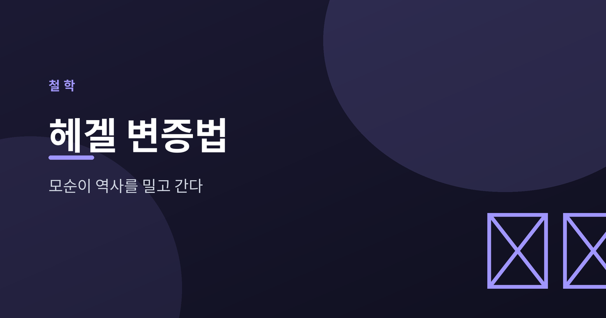
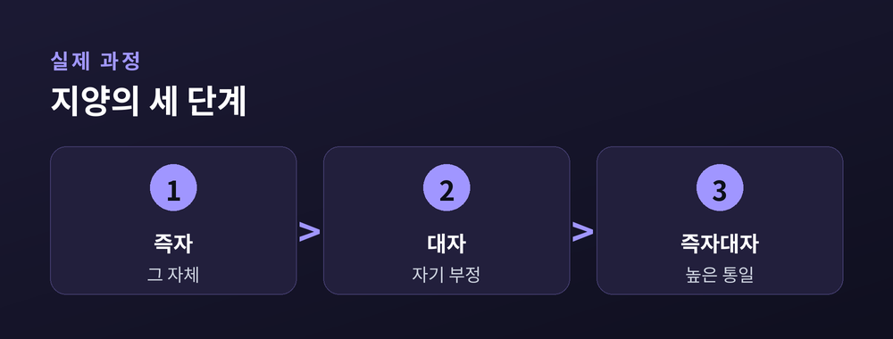

모순이 역사를 밀고 간다

변증법은 대립과 모순을 통해 더 높은 단계로 나아가는 사고의 운동입니다.
멈춰 있는 것이 아니라, 안에 품은 긴장 때문에 스스로 움직입니다.
헤겔은 이 운동을 사고뿐 아니라 역사 전체의 원리로 보았습니다.
어떤 상태든 그 안에 자기를 부정하는 씨앗을 품고 있다는 것입니다.
흔히 정(正)·반(反)·합(合)의 3단계로 배웁니다.
어떤 주장이 서면, 그에 맞서는 주장이 나오고, 둘을 넘어선 종합이 생긴다는 도식입니다.
하지만 헤겔 본인은 이 삼분법 용어를 강조하지 않았습니다.
그가 실제로 말한 것은 즉자 → 대자 → 즉자대자로 나아가는 지양의 과정입니다.

핵심 개념은 지양(止揚, Aufheben)입니다.
이 독일어 단어는 세 가지 뜻을 한꺼번에 지닙니다.
낡은 것을 부정하고, 동시에 보존하며, 더 높이는 것입니다.
합은 반을 단순히 없애지 않습니다. 대립을 껴안아 한 단계 위로 끌어올립니다.
유명한 예가 주인과 노예의 변증법입니다.
주인은 노예에게 의존하게 되고, 노예는 노동을 통해 자기를 세웁니다.
헤겔에게 역사란 이렇게 대립을 넘어 자유가 실현되는 과정이었습니다.
마르크스는 이 논리를 물질과 계급 투쟁에 적용해 유물변증법으로 이었습니다.
대립은 끝이 아니라 성장의 계기입니다. 갈등을 마주할 때 우리는 한 뼘 더 자랍니다.